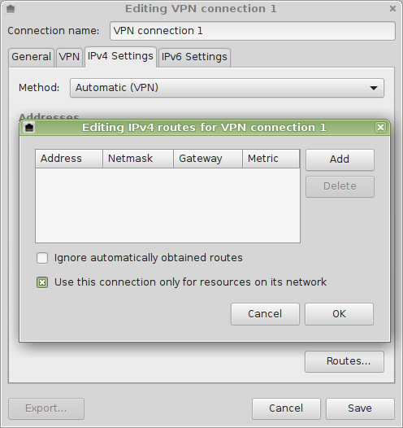
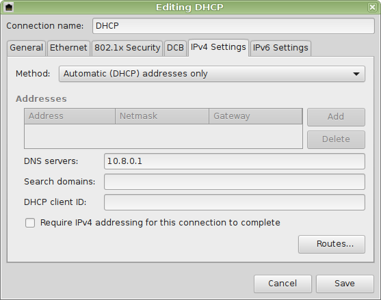
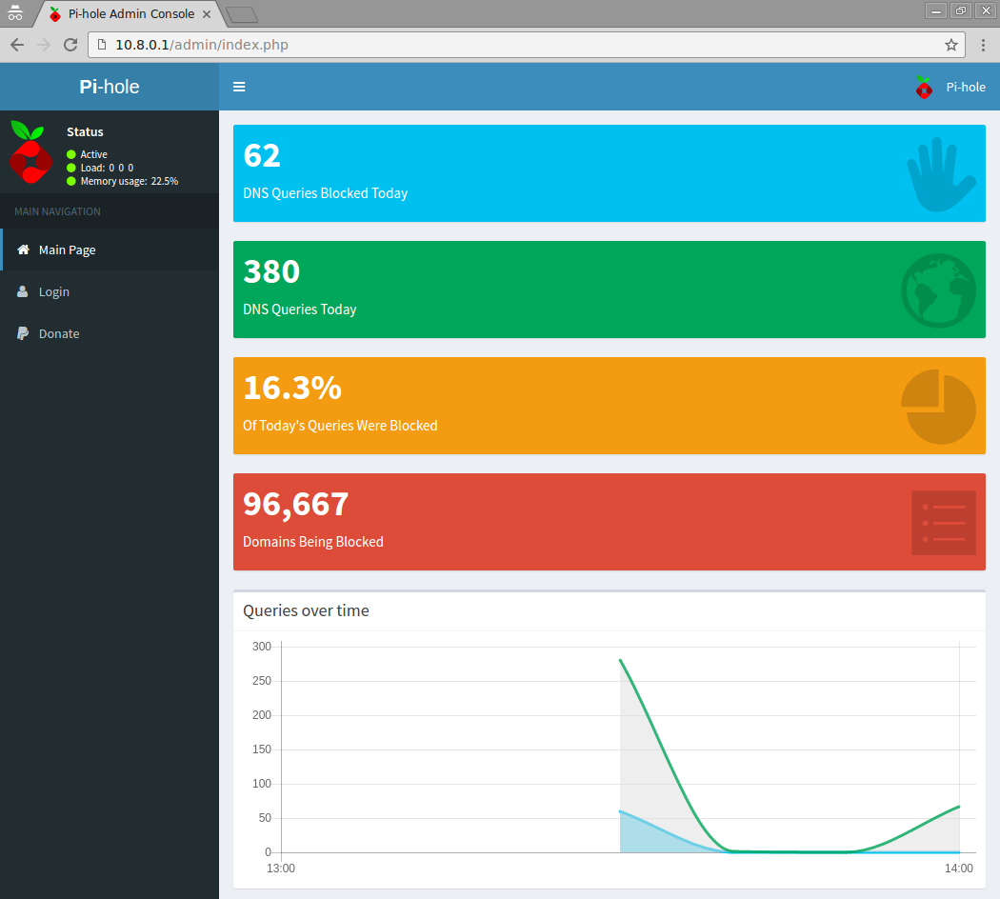

Optional: Only route DNS via VPN
Optional: Only route DNS via VPN¶
With this setup you will force connected clients to use only the DNS provided by the VPN connection, i.e. the Pi-hole. Do this only if you don't want to tunnel all traffic from the client thru the VPN, but only its DNS queries.
Edit your /etc/openvpn/server.conf and remove (comment) the following line:
# push "redirect-gateway def1 bypass-dhcp"
Using a client config file¶
This works pretty much out of the box with common client.ovpn files, like this provided one: client.ovpn
Remember to replace the locations of your keys and the address/host name of your server.
Using the Network Manager¶
When using the Network Manager, you will have to do some additional setting on the client side of things:

Alternative 1: Disable Network Manager's internal DNS server¶
Edit /etc/NetworkManager/NetworkManager.conf:
# dns=dnsmasq
sudo restart network-manager
When connecting your DNS server will now be properly picked up and used by your client.
Alternative 2: Set DNS server address of your Pi-hole manually on the main interface¶
You can also set the address of the DNS server manually (use the device which actually connects to the internet, e.g. eth0):

After doing either alternative, you should see:
pi.hole has address W.X.Y.Z (outside address of your VPN server) pi.hole has IPv6 address A:B:C:D:E:F (outside address of your VPN server)
The web interface of your Pi-hole will be visible at http://pi.hole/admin/ (even with the recommended firewall configuration mentioned on another subpage)

Troubleshooting¶
If your new DNS server configuration has not been activated (try restarting the interface / system) you will see
host pi.hole Host pi.hole not found: 3(NXDOMAIN)
If you are not connected to your VPN network you will see
host pi.hole ;; connection timed out; no servers could be reached